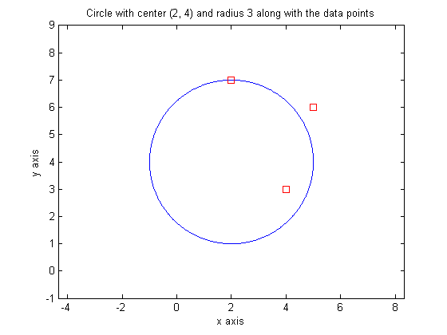

CS310 Fall 2015 Homework Assignment 1
- Name: Yizhe Qu
- Team Lab: 304
- Due Date: Thursday, October 1 by 4 pm
Contents
Statement of Integrity
Don't forget to read, sign, and hand in the Statement of Integrity
Problem 1.a: Writing MATLAB commands
Write exactly one line of code to create each of the following vectors.
clear % 1. a1 = 4 4 4 4 4 4 4 4 4 a1 = 4 * ones(1,9) % 2. a2 = 1.0000 0.5000 0.3333 0.2500 0.2000 a2 = [1./(1:1:5)] % 3. a3 = 2 5 8 11 14 17 14 12 10 8 6 4 a3 = [2:3:17 14:-2:4] % 4. a4 = 0 0 0 0 0 0 0 3 a4 = [zeros(1,7) 3] % 5. A 5 x 10 matrix named a5 containing 0's, 2's, and 5's as shown in the write-up. a5 = [2 .* eye(5); 5 .* ones(5)]'
a1 =
4 4 4 4 4 4 4 4 4
a2 =
1.0000 0.5000 0.3333 0.2500 0.2000
a3 =
2 5 8 11 14 17 14 12 10 8 6 4
a4 =
0 0 0 0 0 0 0 3
a5 =
2 0 0 0 0 5 5 5 5 5
0 2 0 0 0 5 5 5 5 5
0 0 2 0 0 5 5 5 5 5
0 0 0 2 0 5 5 5 5 5
0 0 0 0 2 5 5 5 5 5
Problem 1.b: Writing MATLAB commands
Use MATLAB's matrix element access syntax to complete each of the following actions:
clear data = [ 2 7 4 3; 3 4 7 6; 8 3 5 1; 1 4 2 6; 7 2 2 5 ]; % 1. assign the transpose of the second row to b1 b1 = data(2,[1 2 3 4])' % 2. assign the first 3 columns to b2 b2 = data([1 2 3 4 5],[1 2 3]) % 3. assign the second and fourth values of the first and third row to b3 b3 = data([1 3],[2 4]) % 4. change data so that its first and fourth columns have been switched data = data([1 2 3 4 5],[4 2 3 1])
b1 =
3
4
7
6
b2 =
2 7 4
3 4 7
8 3 5
1 4 2
7 2 2
b3 =
7 3
3 1
data =
3 7 4 2
6 4 7 3
1 3 5 8
6 4 2 1
5 2 2 7
Problem 2: Creating a tax table
Create and display a matrix with four columns:
- column 1 contains amounts from $100 to $1000 in increments of $50
- column 2 contains the state sales tax due in Arizona
- column 3 contains the state sales tax due in Nevada
- column 4 contains state sales tax due in California
clear format bank % this will format money values nicely bank = [100:50:1000; 0.056 .* (100:50:1000); 0.0685 .* (100:50:1000); 0.075 .* (100:50:1000)]'
bank =
100.00 5.60 6.85 7.50
150.00 8.40 10.28 11.25
200.00 11.20 13.70 15.00
250.00 14.00 17.13 18.75
300.00 16.80 20.55 22.50
350.00 19.60 23.98 26.25
400.00 22.40 27.40 30.00
450.00 25.20 30.83 33.75
500.00 28.00 34.25 37.50
550.00 30.80 37.68 41.25
600.00 33.60 41.10 45.00
650.00 36.40 44.53 48.75
700.00 39.20 47.95 52.50
750.00 42.00 51.38 56.25
800.00 44.80 54.80 60.00
850.00 47.60 58.23 63.75
900.00 50.40 61.65 67.50
950.00 53.20 65.08 71.25
1000.00 56.00 68.50 75.00
Problem 3: Plotting
Plot a circle with center (2, 4) and radius 3 along with the data points (2, 7), (4, 3), and (5, 6) on a single figure.
clear format short % this will change the format back to the default format %plot the given circle angle = 0: 0.01: 2 * pi; xPos=3 * cos(angle); yPos=3 * sin(angle); plot(2 + xPos,4 + yPos,'b') hold on %plot the given points cX=[2,4,5]; cY=[7,3,6]; plot(cX,cY,'rs') axis([-3 7 -1 9]) axis equal %add title and axis labels title('Circle with center (2, 4) and radius 3 along with the data points') xlabel('x axis') ylabel('y axis') hold off
Problem 4: Defining a function
Part a. Define a function named insideCircle that takes 3 arguments as input: a point, the center of the circle, and the radius of the circle. The function returns 1 if the point is inside the circle, 0 if the point is on the circle, and -1 if the point is outside the circle.
Don't forget to attach your insideCircle.m function definition file
Part b. Demonstrate that your function works by adding code to call the function using a circle with center (2, 4) and radius 3 and the data points (2, 7), (4, 3), and (5, 6) and display the results.
%part a: %function defined in file insideCircle.m %part b: %for a circle with center (2, 4) and radius 3 %determine if point (2, 7) is inside the circle result1 = insideCircle([2,7],[2,4],3) %determine if point (4, 3) is inside the circle result2 = insideCircle([4,3],[2,4],3) %determine if point (5, 6) is inside the circle result3 = insideCircle([5,6],[2,4],3)
result1 =
0
result2 =
1
result3 =
-1